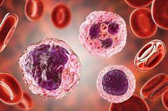

Los monocitos son glóbulos blancos de forma irregular que circulan en el torrente sanguíneo. A diferencia de otros glóbulos blancos, los monocitos son grandes y tienen un núcleo en forma de frijol en la célula. Cuando los monocitos entran en un órgano o tejido del torrente sanguíneo, se diferencian en células llamadas "macrófagos"; por tanto, los monocitos son las células precursoras de los macrófagos.Aproximadamente del 3 al 8% de los glóbulos blancos son monocitos en el sistema circulatorio humano. Todos los glóbulos blancos se derivan de células progenitoras. Sin embargo, en este caso, las células progenitoras se diferencian en monoblastos y luego en promonocitos. Los promonocitos finalmente se diferencian en monocitos. Las tres funciones principales de los monocitos son la fagocitosis, la presentación de antígenos y la producción de citocinas.
Una vez que los monocitos llegan a un órgano o tejido del torrente sanguíneo, se diferenciarán en macrófagos. Los macrófagos son células agranuladas grandes, de forma irregular con un núcleo grande en forma de frijol. Son capaces de absorber partículas extrañas, que podrían ser una amenaza para la salud humana o causar enfermedades a los humanos. A este proceso envolvente lo llamamos fagocitosis. Una vez que engullen partículas extrañas, forman un fagosoma rodeado de membranas que las rodea. Luego, los lisosomas liberan sus enzimas para matar y digerir las partículas engullidas. Además, los radicales libres que contienen oxígeno producidos rápidamente en los fagosomas también ayudan a degradar los patógenos.
| Similitudes | Diferencias | |
| Monocitos y Macrofagos | Tanto los monocitos como los macrófagos son glóbulos blancos y también células inmunes.
|
Los monocitos y macrófagos son dos tipos de glóbulos blancos. Los monocitos son el tipo más grande de glóbulos blancos que tienen la capacidad de diferenciarse en macrófagos y células dendríticas. Por otro lado, los macrófagos son células especializadas que participan en la inmunidad innata al engullir partículas infecciosas. Esta es la diferencia clave entre monocitos y macrófagos ... Otra diferencia entre monocitos y macrófagos es su tamaño; un monocito es más grande que un macrófago. Además, los monocitos están presentes en el torrente sanguíneo, mientras que los macrófagos están presentes en el líquido extracelular que baña los tejidos. Por lo tanto, esta también es una diferencia entre monocitos y macrófagos . |